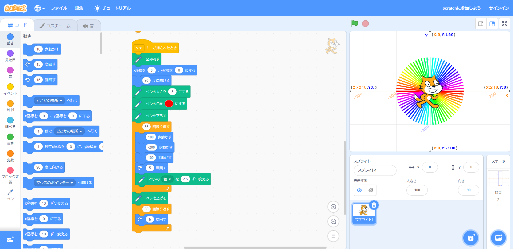
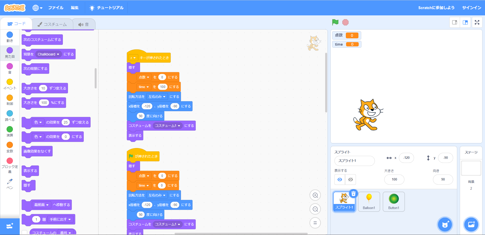

1週目のレポート ： 公大高専１年実習I-1
4組37番 Yuha
第1週目
1-1 サイエンスアート

1.内容
スクラッチを使って線で模様を描くプログラムを書いた。
2.感想
スクラッチはよく使うが、ペンを使って遊ぶことはあまりやらないので楽しかった。猫の角度や歩く距離、ペンの色や太さを計算すればより綺麗で面白い模様が描けると思った。
1-2 ゲーム

1.内容
スクラッチを使ってプログラムを組み、風船拾いゲームを作った。
2.感想
趣味で、よくゲームを作って遊ぶけれど、作ったことのない内容のゲームだったので面白かった。もっと作りたい。
1-3 ホームページ作成
私のホームページ
1.内容
githubやhtmlについて学び、自分のウェブサイトを作った。 2.感想
自分でも作れるのかと驚いた。とても楽しかった。